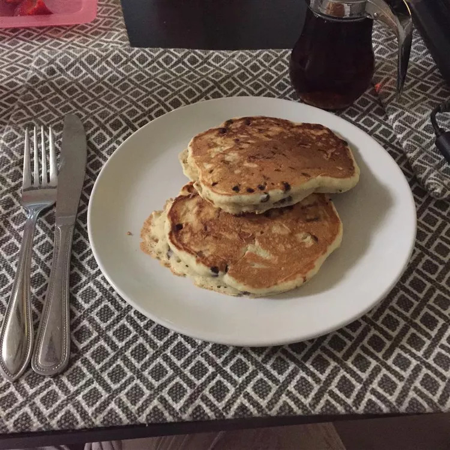

Mini Chocolate Chip Pancakes

Description
This is my favorite chocolate chip pancake recipe — it's so easy! I often make it for family and friends. You may
want to double the recipe because these soft, fluffy pancakes go quickly.
Ingredients
- 1 cup milk
- 1 large egg
- 1 cup all-purpose flour
- 2 tablespoons white sugar
- 1 tablespoon baking powder
- 1 tablespoon baking powder
- 2 tablespoons butter, melted and cooled
- ½ cup miniature chocolate chips
Steps
- Whisk milk and egg together in a bowl until thoroughly combined.
- Sift flour, sugar, baking powder, and salt into a separate bowl. Stir in melted butter, then whisk in milk
mixture until smooth. Fold in chocolate chips.
- Heat a small nonstick skillet over low heat. Pour about 1/3 cup batter into the hot skillet and cover with a
lid. Cook pancake until browned on the bottom, about 3 minutes. Flip pancake, then cover and cook until
browned on the other side, 2 to 3 minutes. Remove to a plate and repeat to make remaining pancakes.